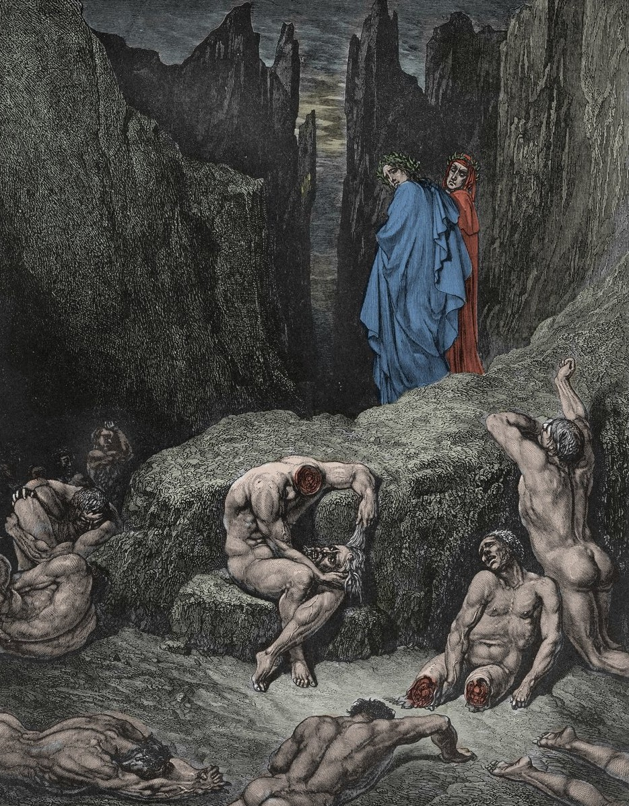

I poeti raggiungono la decima e ultima bolgia di Malebolge, dove sono puniti i falsificatori, colpiti da terribili infermità fisiche e mentali. Nella prima sezione si trovano gli alchimisti (falsificatori di metalli), sfigurati dalla lebbra e dalla scabbia, intenti a grattarsi furiosamente la pelle. Dante parla con l'aretino Griffolino e il senese Capocchio.
La decima bolgia mostra le altre categorie di falsificatori: i falsificatori di persona, ridotti alla follia rabbiosa (come Gianni Schicchi e Mirra); i falsificatori di moneta, idropici e tormentati da una sete eterna (mastro Adamo); e i falsificatori di parola, colpiti da febbre acuta (la moglie di Putifarre e Sinone di Troia). Dante assiste a una rissa verbale tra questi ultimi.
